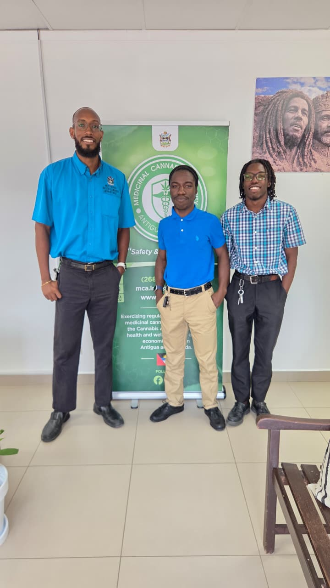

My first steps in web development

This week I built my first blog page. Starting with a few HTML elements helped me see how a document becomes a website. Each heading, paragraph and image has a place in the story I want to share. Building a solid semantic structure ensures that content is accessible and well-organized for all users.
CSS made the biggest visual difference. I experimented with spacing, colours and typography, then used Grid to arrange the main content and sidebar. Small changes made the page much easier to read. Working with layouts gives you direct feedback on how design principles shape modern web interfaces.